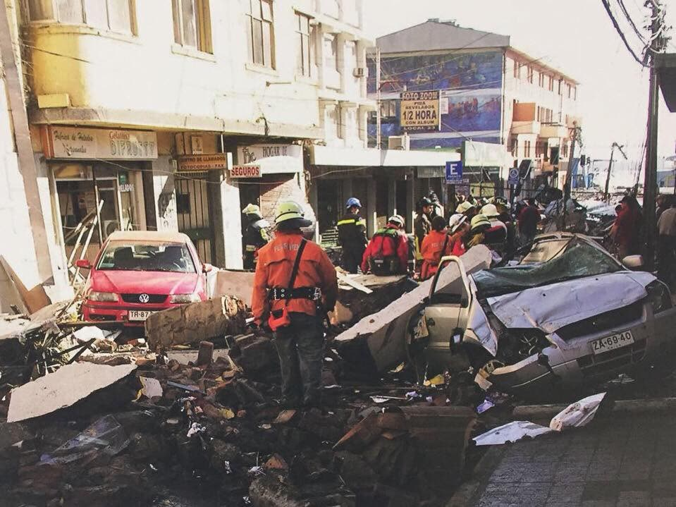
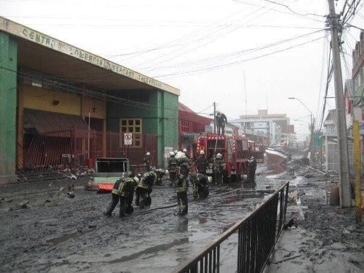
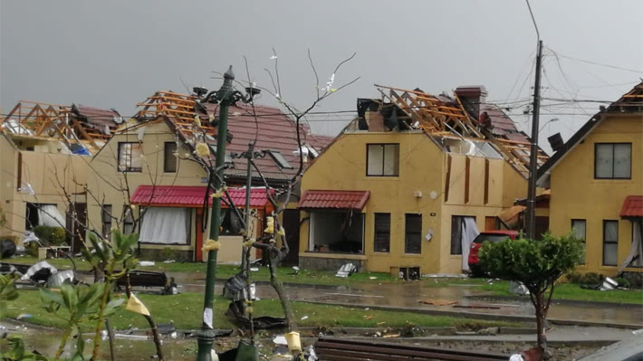

Las emergencias que marcaron a la Quinta y a Talcahuano. Los demás hitos de la compañía están en la línea de tiempo.
1939
Terremoto de Chillán
El 24 de enero de 1939 un gran terremoto, con epicentro cerca de Chillán, golpea la zona. La Quinta trabaja en sus emergencias.
1960
Terremoto de 1960
El 21 de mayo de 1960 un gran terremoto sacude la zona, el primero de los que ese mes golpearon el sur de Chile. La compañía vuelve a enfrentar sus emergencias.
1993
Incendio de San Vicente
En la madrugada del 6 de marzo de 1993, el crudo de petróleo derramado en la bahía de San Vicente se inflama y amenaza los estanques de combustible del puerto. Trabajan 500 bomberos de las once compañías de Talcahuano, con apoyo de Concepción, Penco, el aeropuerto Carriel Sur, ENAP y la Armada.
2010
Terremoto y tsunami del 27F
Durante la madrugada del 27 de febrero de 2010, un devastador terremoto de magnitud 8,8 Mw sacudió la zona centro-sur de Chile, seguido de un tsunami que afectó gravemente las costas de Talcahuano, provocando una de las mayores catástrofes naturales de la historia del país.
Ante esta emergencia, la Quinta Compañía de Bomberos de Talcahuano «Bomba Chile» participó activamente en las labores de respuesta, rescate y apoyo a la comunidad, enfrentando un escenario de destrucción, daños estructurales y múltiples emergencias.
Este acontecimiento marcó profundamente la historia de nuestra compañía, reflejando el compromiso, la solidaridad y la vocación de servicio de sus voluntarios, quienes, pese a las adversidades, se mantuvieron al servicio de Talcahuano y sus habitantes.


2017
Incendios forestales
Un verano especialmente caluroso desata grandes incendios forestales entre Coquimbo y Los Lagos, con mayor intensidad en las regiones de O'Higgins, Maule y Biobío. Arrasan bosques, poblados y el trabajo de muchas personas, y la Quinta trabaja en esta emergencia.
2019
Tornado de Talcahuano
El 31 de mayo de 2019, un devastador tornado de categoría EF2 afectó las comunas de Talcahuano y Concepción, provocando graves daños en viviendas, infraestructura y diversos sectores de la ciudad.
Ante esta emergencia, la Quinta Compañía de Bomberos de Talcahuano «Bomba Chile» fue la primera unidad bomberil en movilizarse, participando activamente en las labores de respuesta y atención de las múltiples emergencias ocasionadas por el fenómeno.
Este acontecimiento constituye un importante hito en nuestra historia operacional, reafirmando el compromiso, la preparación y la vocación de servicio de nuestros voluntarios en la protección de la comunidad.
